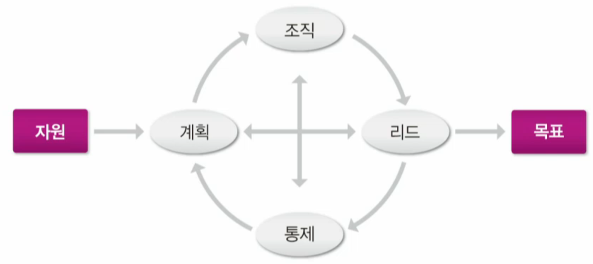

knou_1_1_경영학원론
경영은 인류 초기부터 존재한 행위로 목표를 달성하기위해 사람들을 활용해서 달성하는 과정이라고 할 수 있다.
쿤츠와 오도넬
: 남을 통해 이루어 가는 것을 경영이라 정의
모든 조직에 경영이라는 활동을 했다.
페이욜(Fayol)의 산업 및 일반 관리
페이욜이라는 사람은 경영과 관리를 별도의 하나의 활동이라고 구분함.
- 경영
기술활동,상사활동(구매.판매.교환),재무활동,보전활동,회계활동,관리활동
- 관리활동
계획(planning),조직(organize),명령(command),조정(coordinating),통제(controll)
정리
페이욜은 경영은 조직 자체에서 하는 모든 활동을 이야기하고, 관리는 그 중에 하나의 기능이라고 생각햇다.
현대는 같다고 생각한다는 차이가 발생
드럭커(Peter Drucker)
- 모든 경영자의 공통적인 5가지 활동
목표수립: 조직 목표 수립 및 목표 달성을 위한 활동 지정
조직: 일을 관리 가능한 활동으로 분류 및 인원 선발
동기부터 및 커뮤니케이션: 급여,승진,커뮤니케이션을 통해 팀워크 창출
측정: 목표와 기준을 설정하여 성과를 평가
인력개발: 직원의 가치를 발견하고 능력을 개발
경영의 핵심 4가지 행동
계획
조직
리드
통계: 목표와 실제가 다를때 차이를 조정하는 것이 통제
경영의 정의
조직이 처하고 있는 환경에 대응하여 한정된 자원을 계획,조직,리드,통제하여 조직의 목표를 효율성과 효과성의 균형을 고려하면서 달성하는 과정이다.
다른 사람과 함께 일한다. -> 조직이 발생
목표의 달성 -> 조직은 목표를 달성하기 위한 모임 : 핵심
효과성과 효율성의 균형 ->
효과성은 투입되는 자원은 고려하지 않고 성과를 극대화 하는 것.
효율성은 성과보다는 투입되는 자본을 최소화하여 성과를 만드는 것.
빈대를 잡기위해 집을 태운다 => 효과성 최고, 호율성 최악
환경에 대응한다.
제한된 자원을 활용한다.
경영의 과정

순환적인 과정으로 목표를 달성하기 위해 경영을 한다.
계획
조직의 성과를 위해 목표를 설정하고 목표를 달성하기 위한 과업을 정하고 필요한 자원을 결정하는 일
경영전략 : 기업이 나아가는 방향(추상)을 정하는것.
계획은 구체적인 일을 정하는것 (구현)
의사결정
계획
조직
계획이 수립되면 과업을 정하고, 관련 과업을 묶어 부서를 정의하고, 권한을 부여하고 ,자원을 배분하는 과정
조직: 조직의 구조를 결정
인적자원관리: 구직, 평가, 승진등을 말함
리드
조직 목표를 달성하기 위해 직원들에 일할 동기를 부여하는 활동
동기부여
리더십
통제
직원들의 활동을 관찰,평가하고 조직이 목표를 향해가고 있는지 분석하고 필요한 경우 수정을 가하는 작업
통제 과정을 통해 문제를 발견하고 차기 계획에 반영하기위해 필요하다.
기업과 비즈니스
조직은 구체적인 목표가 있고 목표를 달성하기 위해 사람들이 의도적으로 개발한 구조를 형성하고 있는 실체라고 정의
모두 명확한 목표를 가지고 있다.
모두 사람으로 구성된 실체이다.
구성원들이 일을 잘하기 위해서 의도적으로 개발한 구조를 가지고 있다.
조직의 구조가 기업과 대학이 다른 이유는 목표를 달성하는 데 있어서 희도적으로 적합한 조직 구조를 개발하기 때문입니다.
전통 조직과 현대 조직은 차이가 발생하는데 그 이유는 경영을 할때 환경에 따라 영향을 받기 때문입니다.
환경에 잘 적응하는 조직으로 바뀌는 과정이 있습니다.
경영의 대상
조직의 운영원리를 간단하게 생각하면 크게
경제력과사랑인데 기업은 모든 조직 중 두 가지가 가장 균형을 이룬 채 운영된다.기업은 현대 사회에서 가장 많이 존재하는 조직이며 한 국가와 경제와 개인 활동에 가장 많은 영향을 미치는 조직이다.
기업의 조직은 매우 복잡하다.
기업의 의미
비즈니스: 이익을 창충하면서 제품과 서비스를 제공하기 위해 행하는 활동을 의미
벤처: 일회성 투자를 의미하는데 성공하면 이익을 배분하고 바로 해체하는 형식
계속체: 계속적으로 사업을 수행하기 위한 실체
기억은 제품과 서비스의 생상관 판매를 통해 이윤을 창출하기 위해 구성된 조직체로 개인 혹은 여러 사람의 협력을 통해 운영되는 ;하바
기업 경영과 이윤
기업가 : 사업을 시작하기 위해 기업을 세우는 사람
전문 경영자 라는 말이 있듯이 기업가와 경영은 다른 의미다.
수익 : 판매량 * 가격 = 총 매출액 = 기업의 총소득
이익 : 수익 - 총 비용
기업 경영과 이윤
위협을 감수한 대가를 감수해야 이윤이 발생한다.
기업가의 혁신의 대가: 남들과 다르게 해야 기업이 성공할 수 있다. 대가는
이윤생활의 질의 향상과 일자리의 창출
기업 부의 창출의 기초: 생상 5요소
기업이 수행하는 사업이 부를 창출하기 위해서는 자원이 필요하다.
전통적인 생산의 3요소 + 산업이 고도화 되면서 추가된 2요소
자본: 기계,도구,건물 등 생산수단
노동: 생산물을 얻기 위해 들이는 육체적 노력이나 정신적 노력
토지: 토지는 땅 뿐만 아니라 생산에 필요한 천연자원을 말함
기업가 정신: 천연자원,자본을 결합하여 제품과 서비스를 생산
아무리 자원이 풍부해도 기업가 정신이 없으면 아마존이 없었다.
지식: 정보와 기술
경영학을 공부하는 이유
우리는 누구나 조직에 소속되어 살아가고 있으며 가족도 기본적인 조직의 하나
자연스럽게 형성된 조직의 목표를 설정하고 리드하고 통제하면서 성취 해나가는 과정이 경영의 핵심
조직의 구성원으로서 직책이나 전문 부서와 관계 없이 조직을 움직이고 조직의 목표를 달성하는 데 도움
문제
- 모든 조직에는 경영이 필요하며 경영과정을 계획(plan), 조직(organize), 명령(command), 조정(coordinate), 통제(control)의 과정이라고 최초로 설명한 사람은? 페이욜
테일러보다 조금 앞서 페이욜은 모든 조직의 경영에 대해 관심을 가지고 경영과정을 설명하였다. 테일러는 공장의 생산성 향상에 관심을 가지고 이론을 전개했다. 페이욜은 경영과 관리를 분리하여 관리를 경영의 한 부문으로 보았다.
- 경영의 정의를 구성하는 핵심 사항이 아닌 것은?
다른 사람과 함께 일하며, 목표를 설정하고 달성하며, 환경에 대응하고, 희소한 자원을 활용하며, 효율성과 효과성의 균형을 도모하는 것이 경영의 핵심이다.
- 경영과정에서 과업을 정하고, 관련 과업을 묶어 부서를 정의하고, 권한을 부여하고, 자원을 배분해야 하는 과정은?
계획, 조직, 리드, 통제가 경영의 순환적 과정이며 조직은 과업을 묶고 부서를 정의하고 권한을 부여하는 과정이다.
- 기업을 잘 설명하는 글은?
기업은 사업을 실행하는 주체로 지속적으로 운영되어야 한다. 일회성으로 끝나는 벤처는 이런 의미에서 기업이라 하기 어렵다.
- 전통적으로 생산 3요소가 부의 창출의 기초가 된다고 보았다. 그렇지만 점차 생산 5요소설이 정착되고 있다. 추가된 2개의 요소에 속하는 것은?
전통적으로 생산의 주요 요소는 노동, 토지, 자본으로 여겼다. 기술이 발달하고 글로벌화된 현대에서는 지식과 기업가 정신이 필요하게 되었고 이를 추가하여 생산 5요소라고 한다.